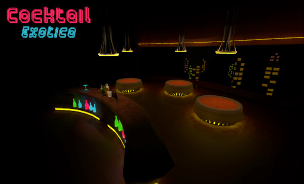
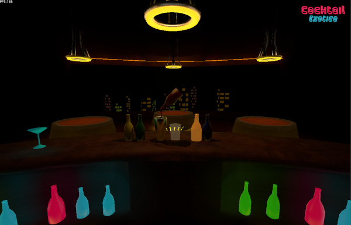
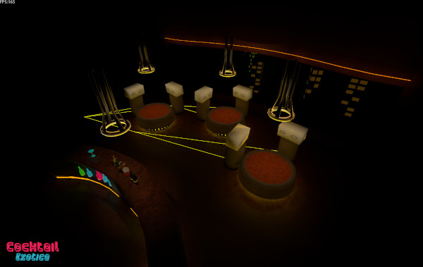

I haven't released any screenshots of my upcoming game Cocktail Exotica in a while so I've
decided to show a small teaser image of one of the locations in the game.
Shop Exterior (click for full resolution)
This is going to be the shop in the game. After the end of each night working in the bar you can choose to
visit the shop to buy items for yourself or for your bar with your earned money. I won't reveal too much
but these "items" will either be purely cosmetic or will have a certain functionality. Since it is now summer
I will hopefully have much more time to work on this game, so you should be seeing more updates in the future. As
always if you have any feedback or comments feel free to send me an email (scarbox@proton.me).
NOTE: Things in this image are subject to change
New Design
May 27, 2022
You may of noticed that once again, the site looks completely different now. My previous
site wasn't very good. The design aspect of it was alright, but the code was a complete
mess and the website was pretty wonky looking on mobile.Take a look at these two code snippets
(old site on the left, new on the right):
Both these snippets of code are for the navigation system of the site. The previous site
had a more complex navigation system that conveyed a lot more info than the new one, however
the code is still terrible. Look at how many <div> tags there are nested inside of
each other! Now compare this to the new design which uses only one <div> tag (in the entire
document!), and is much more readable and manageable. This new design is also easier to adapt for
mobile devices since the layout will stay exactly the same no matter what device you're on. There's
also some cool new spinning gears (very important). Another thing I did was optimize the size of the
webpage, the old website's homepage was a whopping 8 megabytes, now it is only around 200 kilobytes.
I'm Making a Game in the Godot Engine
May 22, 2022
I'm starting to get tired of making crappy ascii games written in C that run in
the terminal so I've decided to start developing a serious game in the Godot Engine.
The game is called Cocktail Exotica and in the game you play as a bartender and
serve drinks. I've just started working on the game so it's currently very
unfinished but I thought it would be nice to make a blog post to show what I'm
working on. Here are some screenshots of the game (all the assets/art is created
by me):

Cocktail Exotica

Pouring drinks into a cocktail shakerShaking and pouring the cocktail shaker
Godot has a very easy to use pathfinding node, so it was very straightforward to
set up pathfinding for the NPCs. Currently, the NPCs are just placeholder for now,
but I do plan on them looking stylized and strange, rather than humanoid.

NPC pathfinding trails
Why Use Godot?
Some of you may be wondering why I'm using the Godot Engine to make a 3D game. I'll
list my reasons below:
Godot's 3D Engine is very capable, the physics aren't the greatest, but I'm not
really using any physics in my game.
Godot is free and open source,
so I don't have to pay any royalties/fees, unlike with Unity and Unreal. This means no mandatory
"Made with xyz" splash screen as well. Since Godot is open source I also know exactly what is
(or is not) being bundled in with my game, this is a fact that people often ignore, but shouldn't.
Godot is very easy to use and the documentation
is very good.
GDScript
is an easy language to learn and use. Also, if I need to I can use C++ or even C# as the language.
Godot 4.0
is in the works which will make the 3D engine even better. The physics engine is also getting overhauled
as well.
Why I've Started Learning C
Feb 21, 2022
For a while now, I've wanted to expand upon my programming skills. I wanted to
learn a compiled, low level language. I've never been a big fan of languages
like Python or Java, which are pretty slow and require you to install an
interpeter (or the JVM for Java) to run programs written in these languages.
I feel like these languages are like training wheels that I've never taken off.
Modern software is starting to become pretty bloated and slow, and these high
level lanuages that attempt to simplify programming aren't helping. In languages
like Java, you're at the mercy of the garbage collector and JVM. For things like
game development (which is what I want to get into), it's very important to
have the power to manually manage memory and optimize your game so that it can
run on a large range of hardware. I do understand that a lot of jobs use these
languages, but I still feel like learning a lower level language will help
broaden my understanding of programming.
After looking into a few low level languages like Rust and C++, I've decided
to just start with good ol' C. Even though C is quite old, I still feel like
it's relevant. C's syntax serves as the basis of a lot of modern programming
languages and I'll also be able to quickly start learning C++ afterwards, if
I feel the need to. I would also like to know the exact differences between
C and C++ rather than just "C++ is just C but with objects". Anyways, learning
C will hopefully teach me:
how to approach problems without thinking about objects as the solution
memory management and optimizing programs
good programming practices
a better understanding about how programs work and how they interact with
the hardware
Hopefully I'll soon start experimenting with writing programs in C. I'll post
some programs that I deem worthy if I write any, if not you'll probably end up
seeing a blog post titled "Why I've stopped learning C" instead.
New Year, New Site Redesign
Jan 10, 2022
To Start off the new year I decided to redesign my site once again. I
liked my previous design, but I felt like it was a bit dull and lacked
color. The entire website also felt a bit empty and barren (mostly due
to my lack of complete projects). Hopefully in the new year of 2022 I'll
actually be able to show some cool content on my site. In the meantime,
enjoy the pretty colors. I hope everyone that's reading this has a great 2022!